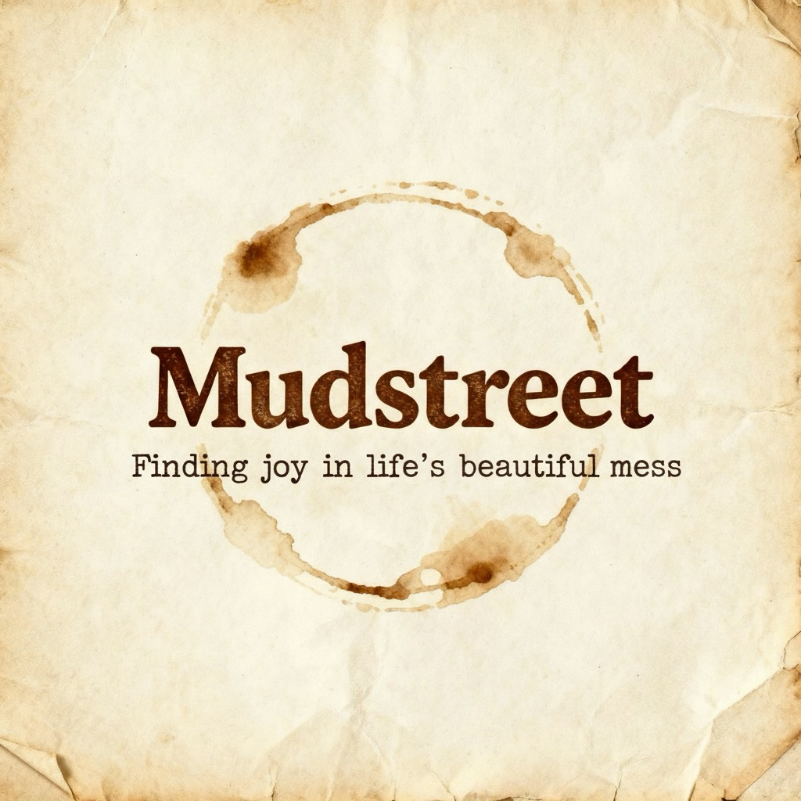

🌍
🇺🇸
English
🇪🇸
Español
🇧🇷
Português
🇫🇷
Français
🇺🇦
Українська
🇨🇳
中文

Bully-Wise
Teaching kids to stand up
×
All
0
Saved
0
🎭 How to use this with your child
1
Find the situation that matches what's happening
2
Read the "Help them understand" section together
3
Practice the scripts out loud — you play the bully, they practice the response
4
Do it again until it feels natural. Practice is everything.
✨ All
🗣️ Verbal Teasing
✊ Physical
👥 Social/Exclusion
📱 Online/Cyber
🧠 ADHD-Specific
🙋 Being a Bystander
🏫 Telling an Adult
Bully-Wise
Add to your home screen — free, works offline
+ Add to Home Screen
×